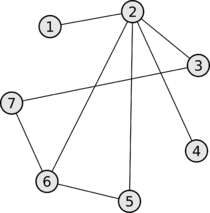
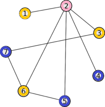

Раскраска графа
На рисунке представлен граф G(U,V), где U - множество ребёр, а V - множество вершин.
Необходимо, выбирая цвет для вершины в левом окне, раскрасить его.
Выбор цвета для вершин
Вершина 1 -
Иходный граф и его раскраска

